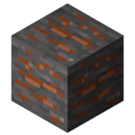
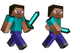

7.0
Survival: Minecraft
| #lang survival-minecraft | package: survival-minecraft |
1 Functions
procedure
(custom-biome [ #:biome-img img #:rows rows #:columns columns #:start-tile start-tile #:components first-component] more-components ...) → entity? img : image? = (first (shuffle bg-list)) rows : number? = 3 columns : number? = 3 start-tile : number? = 0 first-component : component-or-system? = #f more-components : (listof component-or-system?)
Returns a custom background
procedure
(custom-skin [ #:sprite sprite #:damage-processor damage-processor #:position position #:speed speed #:key-mode key-mode #:mouse-aim? mouse-aim #:components first-component] rest ...) → entity?
sprite : sprite? = (sheet->sprite steve-animated #:rows 1 #:columns 2 #:delay 3)
damage-processor : damage-processor? = (filter-damage-by-tag #:filter-out '(friendly-team passive) #:show-damage? #t) position : posn? = (posn 100 100) speed : number? = 10 key-mode : (or/c 'wasd 'arrow-keys) = 'arrow-keys mouse-aim : boolean? = #f first-component : component-or-system? = #f rest : (listof component-or-system?)
Returns a custom avatar...
procedure
sprite : sprite? = (row->sprite chicken-sheet #:columns 4 #:delay 4) position : posn? = (posn 0 0)
name : string? = (first (shuffle (list "Adrian" "Alex" "Riley" "Sydney" "Charlie" "Andy"))) tile : number? = 0 dialog : dialog? = #f mode : (or/c 'still 'wander 'pace 'follow) = 'wander game-width : number? = 480 speed : number? = 2 target : string? = "player" sound : any/c = #t scale : number? = 1 first-component : component-or-system? = #f more-components : (listof component-or-system?)
Creates a custom npc that can be used in the npc list
of survival-game
procedure
amount-in-world : positive? = 1
sprite : sprite? = (first (shuffle (list slime-sprite bat-sprite snake-sprite))) ai : ai-level? = 'medium health : positive? = 100
weapon : entity? = (custom-weapon #:name "Spitter" #:dart (acid)) death-particles : entity? = (custom-particles) night-only? : boolean? = #t first-component : any/c = #f more-components : (listof any/c)
Creates a custom enemy that can be used in the enemy list
of survival-game.
procedure
entity : entity? = (ore-entity) sprite : sprite? = #f position : posn? = #f name : string? = #f tile : number? = #f amount-in-world : number? = 10 value : number? = 10 respawn : boolean? = #t first-component : component-or-system? = #f more-components : (listof component-or-system?)
Returns a custom coin, which will be placed into the world
automatically if it is passed into battle-arena-game
via the #:coin-list
parameter.
procedure
headless : boolean? = #f
biome-ent : entity? = (plain-forest-bg #:bg-img (random-forest)) skin : (or/c entity? #f) = #f starvation-rate : number? = 50 sky : sky? = (custom-sky) entity-list : (listof (or/c entity? procedure?)) = '()
mob-list : (listof (or/c entity? procedure?)) = (list (custom-enemy)) ore-list : (listof (or/c entity? procedure?)) = '() food-list : (listof (or/c entity? procedure?)) = '() crafter-list : (listof (or/c entity? procedure?)) = '() other-entities : (or/c #f entity?) = #f rest : (listof entity?)
The top-level function for the survival-game language.
Can be run with no parameters to get a basic, default game
with nothing in it!
2 Image Assets
value
alex : image?
Alex Image

value
chicken-sheet : image?
Chicken Sheet Image
value
iron-ore : image?
Iron Ore Image

value
steve-animated : image?
Steve Animated Image

value
steve : image?
Steve Image

value
wizard-sheet : image?
Wizard Sheet Image